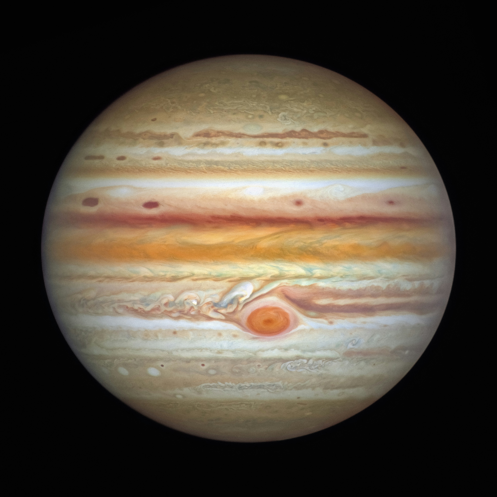

Jupiter is the largest planet in the Solar System.
| Property | Value |
|---|---|
| Year | 11.86 Earth years |
| Day | 9.9 hours |
| Radius | 69,911 km |
| Diameter | 139,820 km |
| Mass | 1.898 × 10²⁷ kg |
| Gravity | 24.79 m/s² |
| Temperature | -145°C |
| Distance | 778.5 million km |
| Moons | 95 |
| Escape Velocity | 59.5 km/s |
| Orbital Speed | 13.1 km/s |
| Atmosphere | Hydrogen and helium |